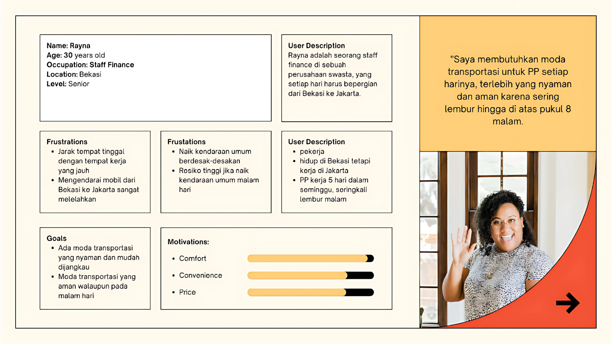
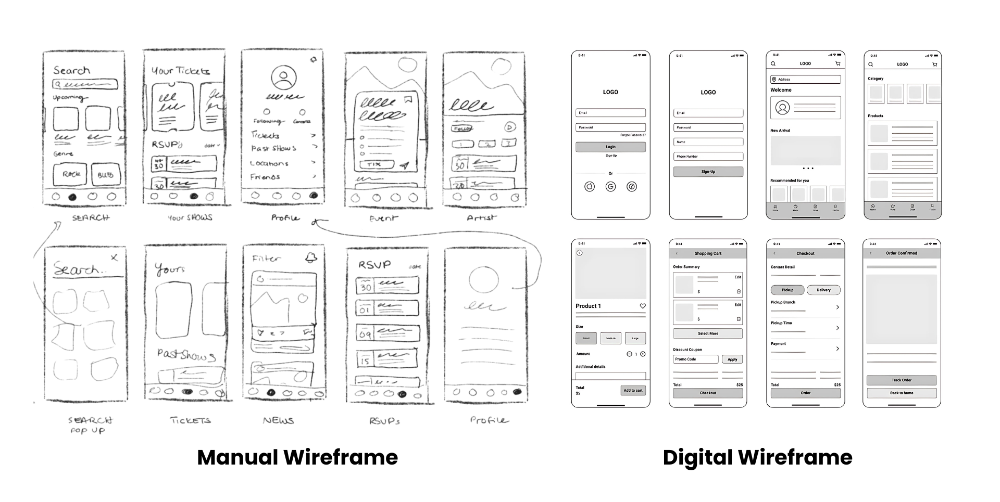
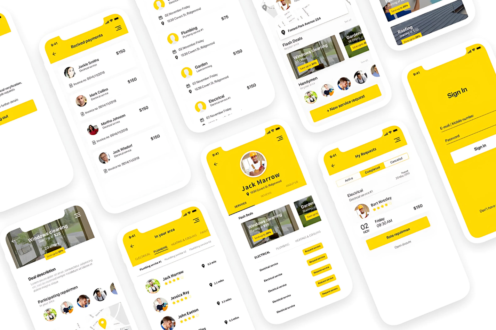

Dalam dunia UI/UX, proses merancang desain bisa melibatkan banyak tahapan tergantung proyek
dan tim yang mengerjakannya. Tapi, di sini kita akan belajar 5 tahap paling umum
yang sering dipakai dalam dunia nyata — mulai dari mengenal pengguna hingga membuat prototype interaktif.
1) User Persona
User Persona adalah representasi fiktif dari pengguna yang menjadi target utama desain. Persona ini
dibuat berdasarkan hasil riset untuk memahami siapa pengguna, apa kebutuhan mereka, apa masalah yang dihadapi,
serta tujuan mereka saat menggunakan produk. Biasanya berisi: nama, usia, pekerjaan, tujuan, tantangan,
dan kebiasaan digital. Untuk membuat user persona, kamu bisa menggunakan tools seperti Google Docs, Figma,
atau platform khusus seperti UXPressiandan Miro yang menyediakan template siap pakai.

Simak video berikut:
2) User Flow
User flow adalah diagram alur yang menggambarkan langkah-langkah yang dilalui pengguna saat berinteraksi dengan produk digital, dari awal masuk hingga mencapai tujuan tertentu. Fokusnya bukan pada logika sistem, melainkan pada
urutan layar atau tindakan pengguna. User flow membantu tim desain memastikan pengalaman pengguna berjalan lancar dan efisien. Visualisasi ini biasanya hanya menggunakan elemen sederhana seperti kotak untuk tiap layar dan panah
untuk menunjukkan alur. Tools seperti Figma, Miro, Whimsical, dan FlowMapp sering digunakan untuk menyusun user flow secara ringkas dan mudah dipahami.
Simak video berikut:
3) Wireframe
Wireframe adalah kerangka kasar dari halaman aplikasi. Fokusnya pada penempatan elemen seperti tombol, teks, gambar, dan struktur layout — tanpa warna atau desain visual. Wireframe dapat dibuat secara manual menggunakan kertas dan
alat tulis (disebut manual wireframe), atau secara digital menggunakan tools seperti Figma dan Balsamiq (digital wireframe). Keduanya bertujuan sama: menyusun struktur awal antarmuka sebelum masuk ke desain visual.

Simak video berikut:
4) Mockup
Mockup adalah desain visual final dari tampilan UI yang sudah lengkap dengan warna, font, dan gambar. Mockup menunjukkan seperti apa tampilan akhir dari aplikasi, namun belum bisa diklik. Mockup biasanya dibuat dengan tools desain
seperti Figma, Adobe XD, atau Sketch karena mendukung visualisasi warna, font, dan layout secara detail. Biasanya digunakan untuk mendapatkan masukan visual sebelum dilanjut ke tahap prototype.

Simak video berikut:
5) Prototype
Prototype adalah versi interaktif dari mockup yang bisa diklik dan digunakan untuk menguji alur penggunaan. Ini membantu mengetahui apakah desain yang dibuat sudah nyaman digunakan. Biasanya digunakan dalam usability testing
sebelum masuk tahap pengembangan. Untuk membuat prototype interaktif, kamu bisa menggunakan Figma, Adobe XD, atau InVision agar pengguna bisa mencoba langsung simulasi desainnya.